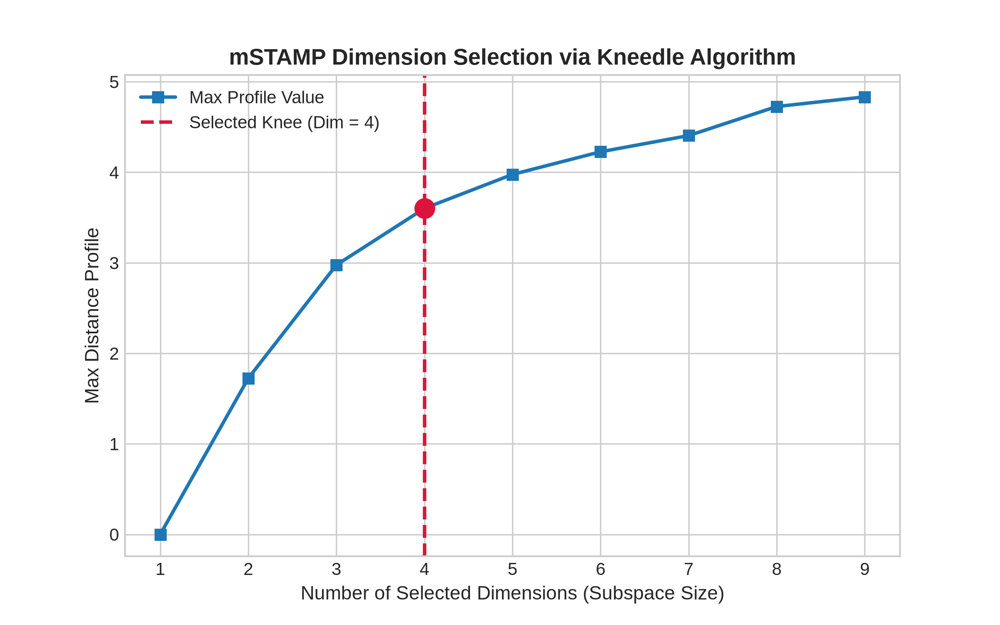
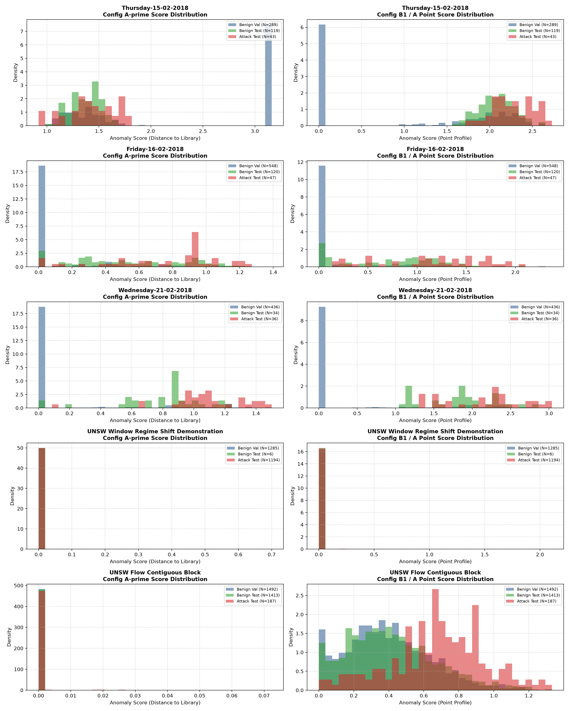
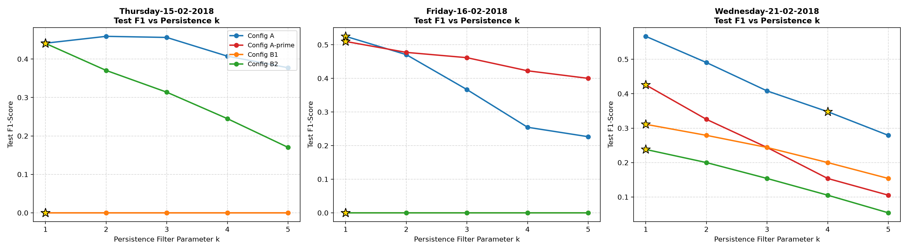
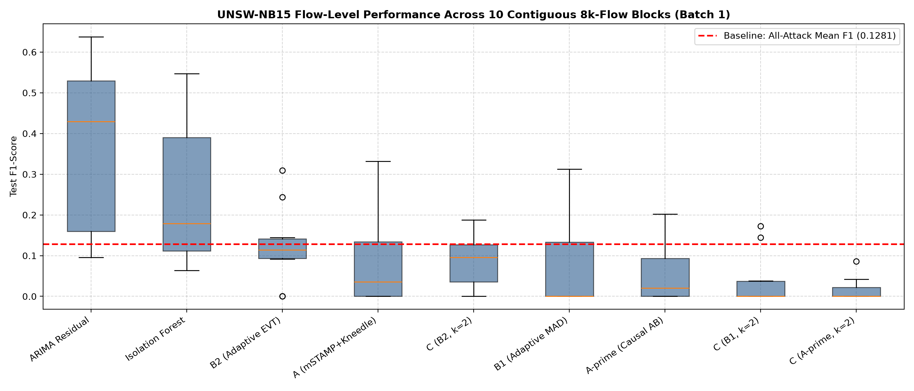
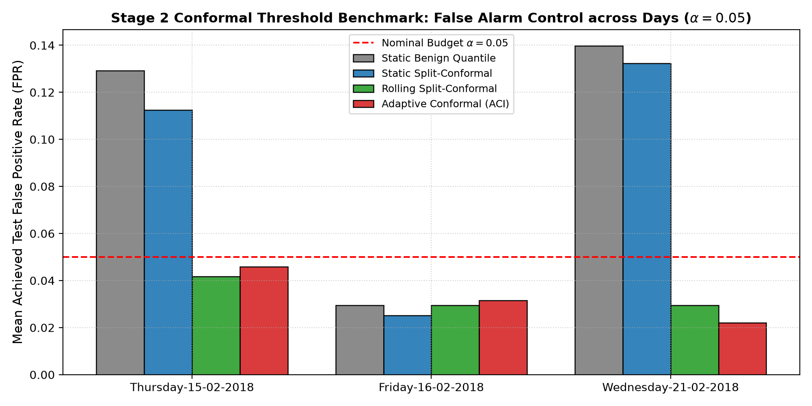
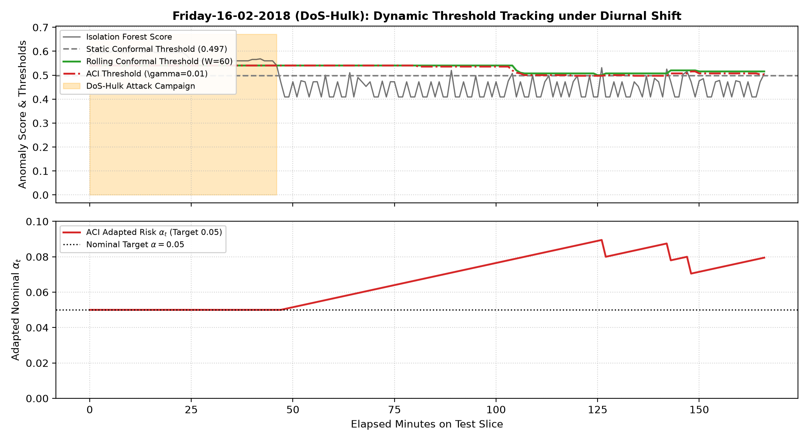
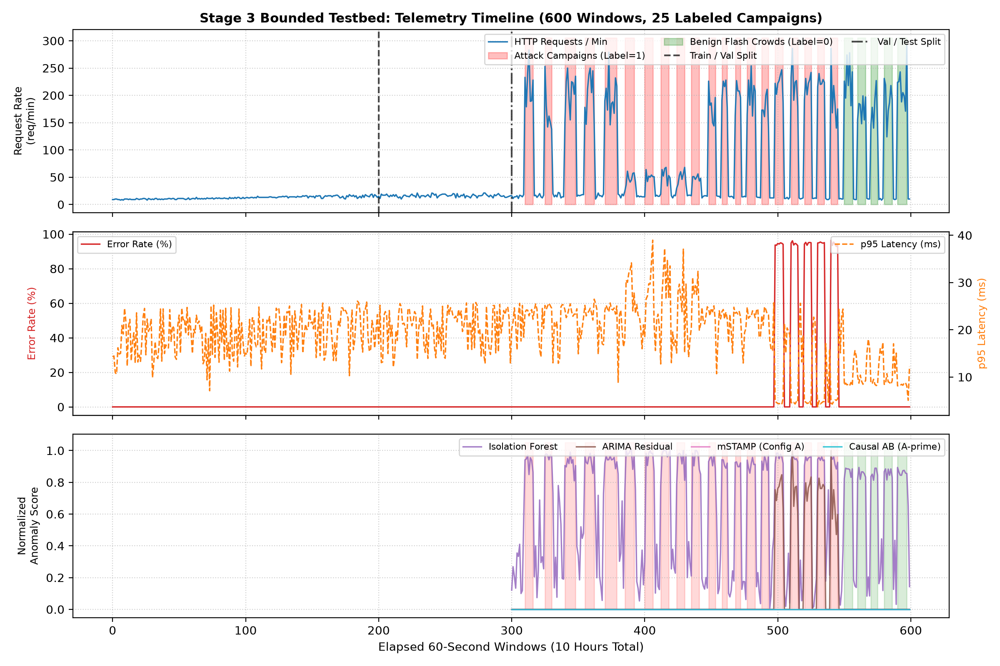
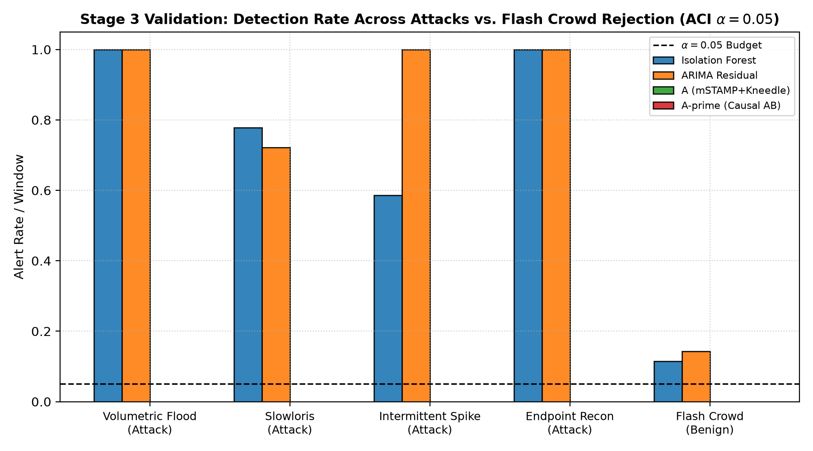
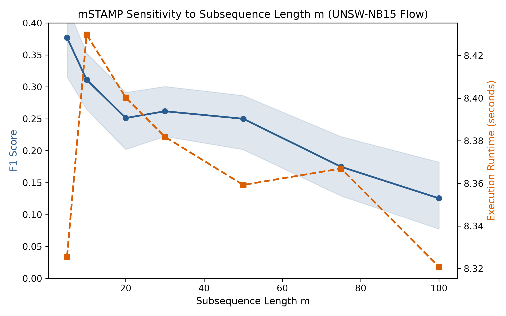
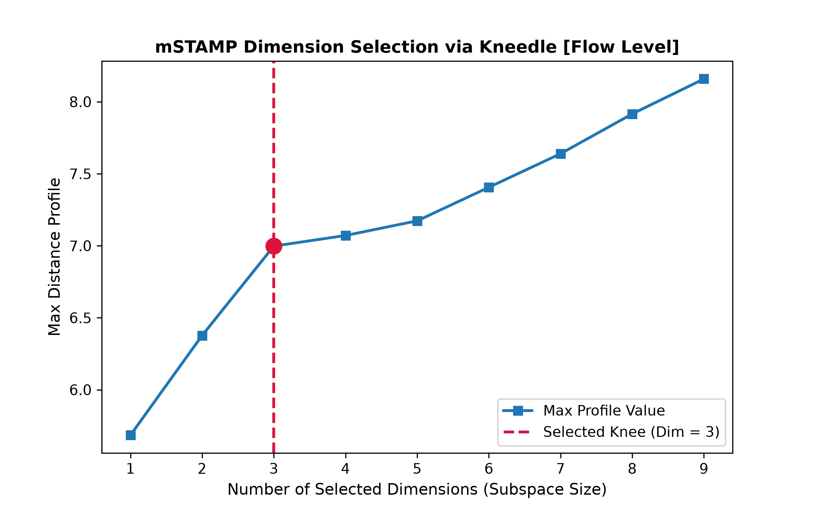

| Variant | ROC-AUC (A / A′) |
|---|---|
| Drop 3 constant channels | 0.5013 / 0.4580 |
| Smooth counts (w = 3) | 0.5000 / 0.5000 |
| No z-normalisation | 0.5000 / 0.5000 |
| Larger m = 20 | 0.5000 / 0.4557 |


| Method | Mean FPR | Target met | Mean recall |
|---|---|---|---|
| Static benign quantile | 0.1237 | 14/32 | 0.3943 |
| Static split-conformal | 0.1199 | 14/32 | 0.3890 |
| Rolling (label-free) | 0.1203 | 18/32 | 0.3362 |
| ACI (label-free) | 0.1003 | 17/32 | 0.2606 |
| Rolling (oracle)* | 0.0306 | 22/32 | 0.2093 |



| Model (α = 0.05, 5 seeds) | ROC-AUC | Recall (%) | F1 | Campaign recall |
|---|---|---|---|---|
| Isolation Forest (static) | 0.942 ± 0.009 | 98.14 ± 0.80 | 0.841 ± 0.009 | 100 / 100 |
| ARIMA Residual (static) | 0.906 ± 0.006 | 98.14 ± 0.80 | 0.846 ± 0.006 | 100 / 100 |
| Config A (mSTAMP) | 0.500 | 0.0 | 0.000 | 0 / 100 |
| Config A-prime (Causal AB) | 0.500 | 0.0 | 0.000 | 0 / 100 |

| Calibration Method | Target α | Mean FPR | Std FPR | Target Met | Mean F1 | Mean Recall |
|---|---|---|---|---|---|---|
| Static Benign Quantile | 0.05 | 0.1237 | 0.1958 | 43.8% (14/32) | 0.4076 | 0.3943 |
| Static Split-Conformal | 0.05 | 0.1199 | 0.1956 | 43.8% (14/32) | 0.4053 | 0.3890 |
| Rolling Conformal (Label-Free) | 0.05 | 0.1203 | 0.1617 | 56.2% (18/32) | 0.3181 | 0.3362 |
| Adaptive Conformal (ACI, LF) | 0.05 | 0.1003 | 0.1337 | 53.1% (17/32) | 0.2675 | 0.2606 |
| Rolling Conformal (Oracle)* | 0.05 | 0.0306 | 0.0300 | 68.8% (22/32) | 0.2349 | 0.2093 |
| Adaptive Conformal (ACI, Oracle)* | 0.05 | 0.0286 | 0.0243 | 71.9% (23/32) | 0.2345 | 0.2075 |
| Static Benign Quantile | 0.01 | 0.0200 | 0.0391 | 65.6% (21/32) | 0.2507 | 0.2278 |
| Static Split-Conformal | 0.01 | 0.0182 | 0.0387 | 71.9% (23/32) | 0.2388 | 0.2202 |
| Rolling Conformal (Label-Free) | 0.01 | 0.0570 | 0.1068 | 53.1% (17/32) | 0.2168 | 0.2168 |
| Adaptive Conformal (ACI, LF) | 0.01 | 0.0570 | 0.1068 | 53.1% (17/32) | 0.2168 | 0.2168 |
| Rolling Conformal (Oracle)* | 0.01 | 0.0106 | 0.0122 | 62.5% (20/32) | 0.1478 | 0.1301 |
| Adaptive Conformal (ACI, Oracle)* | 0.01 | 0.0106 | 0.0122 | 62.5% (20/32) | 0.1478 | 0.1301 |
| Model | Calibration | ROC-AUC | Test FPR | Flash Crowd | Attack Recall | F1 Score | Campaign [95% CI] |
|---|---|---|---|---|---|---|---|
| Isolation Forest | Static Quantile | 0.942±0.009 | 26.85±1.79% | 100.0±0.0% | 98.14±0.80% | 0.841±0.009 | 100/100 [0.964,1.000] |
| Isolation Forest | Static Split-Conf | 0.942±0.009 | 25.91±1.70% | 100.0±0.0% | 97.99±0.79% | 0.844±0.009 | 100/100 [0.964,1.000] |
| Isolation Forest | Rolling (LF) | 0.942±0.009 | 26.50±2.19% | 100.0±0.0% | 97.99±1.27% | 0.842±0.011 | 100/100 [0.964,1.000] |
| Isolation Forest | ACI (Label-Free) | 0.942±0.009 | 7.89±7.73% | 26.06±37.29% | 74.43±14.30% | 0.799±0.072 | 88/100 [0.800,0.936] |
| Isolation Forest | Rolling (Oracle)* | 0.942±0.009 | 5.28±1.23% | 13.26±7.64% | 75.56±9.52% | 0.825±0.063 | 89/100 [0.812,0.944] |
| Isolation Forest | ACI (Oracle)* | 0.942±0.009 | 4.10±0.36% | 8.42±3.58% | 61.63±16.94% | 0.725±0.132 | 76/100 [0.664,0.840] |
| ARIMA Residual | Static Quantile | 0.906±0.006 | 25.67±0.63% | 100.0±0.0% | 98.14±0.80% | 0.846±0.006 | 100/100 [0.964,1.000] |
| ARIMA Residual | Rolling (LF) | 0.906±0.006 | 26.73±1.77% | 100.0±0.0% | 98.15±1.05% | 0.841±0.008 | 100/100 [0.964,1.000] |
| ARIMA Residual | ACI (Label-Free) | 0.906±0.006 | 22.86±0.89% | 100.0±0.0% | 97.68±0.85% | 0.858±0.006 | 100/100 [0.964,1.000] |
| ARIMA Residual | Rolling (Oracle)* | 0.906±0.006 | 7.15±1.42% | 31.00±8.34% | 53.30±11.75% | 0.648±0.102 | 78/100 [0.686,0.857] |
| Config A (mSTAMP) | All Methods | 0.500±0.000 | 0.00±0.00% | 0.00±0.00% | 0.00±0.00% | 0.000±0.000 | 0/100 [0.000,0.036] |
| Config A-prime (AB) | All Methods | 0.500±0.000 | 0.00±0.00% | 0.00±0.00% | 0.00±0.00% | 0.000±0.000 | 0/100 [0.000,0.036] |


| Likely Question | Short Evidence-Backed Answer |
|---|---|
| Did you replicate the 99.6% accuracy? | Base claim concerns UNSW-NB15; under leakage-free causal evaluation MP fails to beat baselines (multi-block mean F1 ≤ 0.1246 vs All-Attack 0.1281). |
| Is the testbed realistic enough? | No — it is a single designed Flask service; we state this explicitly as Limitations 1 & 4. |
| Why is IF's test FPR ~26% on the testbed? | Driven by benign flash crowds flagged at 100%; training-data augmentation drops flash-crowd FAR to 10.16% ± 7.78%. |
| Why call ACI LF 26.1% FAR 'no fix'? | It reduced FAR in some seeds only (std ± 37.3%) and cut campaign recall from 100/100 to 88/100. |
| Does conformal fail theoretically? | Theory is sound, but autocorrelated drifting scores violate exchangeability, making guarantees empirical. |
| Is Config A-prime the recommended method? | It removes look-ahead bias (50%/48%) but does not improve detection; its value is methodological correctness. |
| Why wasn't oracle leakage caught earlier? | Rolling calibrators received y_test == 0 masks in Stages 2–3; label-permutation testing exposed it. |